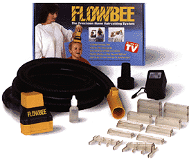
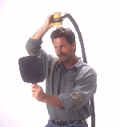
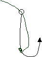

(back to oldies) (back to newsletters)
8/2/97
Yesterday we had quite a day. Laurie was brave enough to let me cut her hair. I have been the barber of the family for nearly four years now. I cut my own hair and also Joseph's and Carl's. I use something called a Flow-bee. It is a strange little gizmo that we saw advertised on TV and decided it was worth a try. Basically it is an electric hair clippers that attaches to the end of a canister vacuum-cleaner hose.


Your hair gets sucked up (by the vacuum) through these clear plastic tubes (actually they look like little open-ended hollow plastic boxes). The hair is then pulled into the cutting blades that are in the yellow housing (see the thing with the yellow "Flowbee" printed on it. The man is holding it in the other picture). You control how long the hair ends-up by stacking more or less of these plastic tubes on the end of the cutter. It works pretty well and makes the hair nice and even.
The hair cut was quite a test for me. Very high stress. Laurie's hair was about a half a foot below her shoulders so I had to do some preliminary hacking away with a scissors. Laurie was of course looking in the mirror the whole time. About half way through the job she looked kind of depressed. But by the time we were done with final adjustments Laurie was all smiles again. Sshhhweeeeuuuuwwww! We still need to do some fine tuning but I think we can call it a success.
We have had only a few fishing adventures since we have been out here. One was at a stocked trout pond. The other was a little closer to the real thing. My father in-law, Jack was here, and he fishes constantly up on Mille Lacs, so I thought we should try something a little different from the usual MN lake fishing. We drove up along the Columbia to the center of a free-flowing stretch of the river. Much of the Columbia is now pooled because of all the hydro-electric dams. Anyway, you can fish from the shore up there and catch a variety of fish that migrate up and down the river. We stopped at a bait shop and got some of the local bait rigs for shore fishing. This included a very different kind of sinker system including a short but thick string of lead attached to the line with rubber tube and three-way swivel. Then shooting of the other loop of the swivel is the hook line. The hook is different from anything in MN in that the line is attached (wrapped) to the middle of the hook and then run up through the eye at the top. This system allows you to take a cluster of salmon goop (actually we have no idea what we were using for bait except that it was expensive and smelled terrible and had texture somewhere between half-chewed steak meat and gelatin) and lay it on the hook and have it be held in place by the loop of line that is formed as it runs out through the eye of the hook.

Anyway, the bait and rigging were quite foreign to Jack and me but made some sense after we used it. The long skinny lead anchor worked well to avoid snags in the river rocks and the strange hook and line system worked well to hold the soft bait in place.
After working most of the day on learning how to rig the line we actually did have a few minutes to fish. We caught a couple fish but not the kind we were supposed to. Some locals coming in from a day on the river identified the fish for us. Apparently they were called pea-mouth or something very similar (from the looks on their faces you could tell these were the equivalent to bull heads or carp; they were not too impressed). However, we filleted them and even tried to eat them. The meat wasn't too bad just very bony.
I continue to enjoy windsurfing on the river. Lately, with the three boys, I do less than I used to but still enjoy an afternoon of rides in the wind on the river. A few weekend ago, Laurie and the boys and I headed down to Columbia Point park to make use of the windy day. I sailed for a while but then the kids were starting to get a little antsy so I suggested that Laurie take them for a little drive while I finished. But unfortunately I forgot to tie down the second windsurfing board that I had sitting loose in the rack on top of the van. And sure enough, after a little driving on the freeway the board fell off the car and was run over by a very large pick-up truck. Thank God it did not cause an accident. Turns out the board was covered by our homeowners insurance so no real loss, just a little scary.
David slept through the night a few nights ago for the first time in a year. He was back to his old tricks again the next night. Now that he is no longer nursing, I am able to get up with him. For the most part, until recently, he has not been too happy to see Dad during the night (he still gets a little cranky when he sees me walk in the room at night). Of course helping with the night duty lowers the impact on Laurie. We are making progress.
David is close to talking. He has a few words but shows signs of kicking into gear. For a long time now his favorite word is "Baseball." "Mom" and "Dad" are next, followed closely by "Yeah" and "No." Whenever we talk about McDonalds (the hamburgers) David goes E-I-E-I-OOOO (the farmer). David also likes to say "wuff-wuff" whenever he sees a dog in a book.
Joseph has just finished a visit with his father in MN and is now staying at Laurie's dad's house on Mille Lacs. This will be a 7 week stay by the time he returns. Carl and I have a little game that we play: we both say, "I want Joseph to come home right now." Then we look at each other and make kind of a grumpy face and pound our fists on the table and say "I can't wait any longer." Carl takes it kind of hard when Joseph goes on his visits to MN. But this year he has been handling it quite well.
Joseph has been doing quite well in school. Kindergarten was kind of a slow start for him; we weren't sure he was going to make it out! But he is now becoming a good reader and continues to be a math whiz. He's very much ready for 4th grade. Yeah! Joseph really likes school.
Carl and David are starting to have fun together. Every once in a while, Carl will just go up to David and say, "Come on David, let's go outside." And off they go.
Carl is very much into road construction equipment. Laurie, David, and Carl often go out in search of construction activity. The back-hoe is still Carl's favorite.
Laurie recently pulled off a major success by finding me some new baseball hats that fit. I have a very large head and off-the-shelf hats just never fit. So Laurie got the idea to search for a custom hatmaker. I think they work out of Nebraska or Oklahoma. They used their largest pattern and the hats are still a little tight. But they should break in with time. We were amazed at how little they charged. It was just a few dollars per hat. And they lowered their minimum order so we only had to buy four.
That's all for now. God bless.